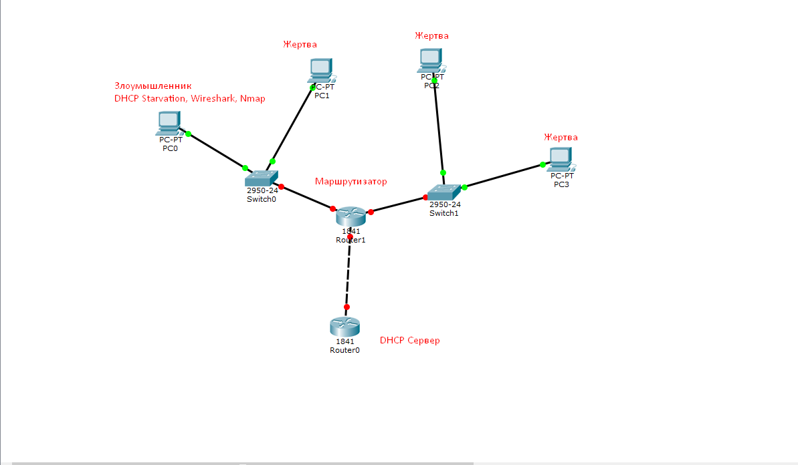
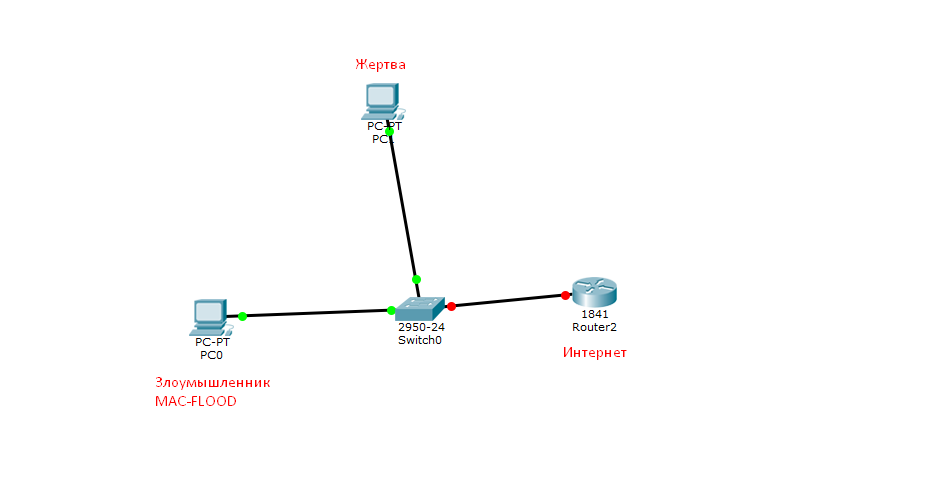
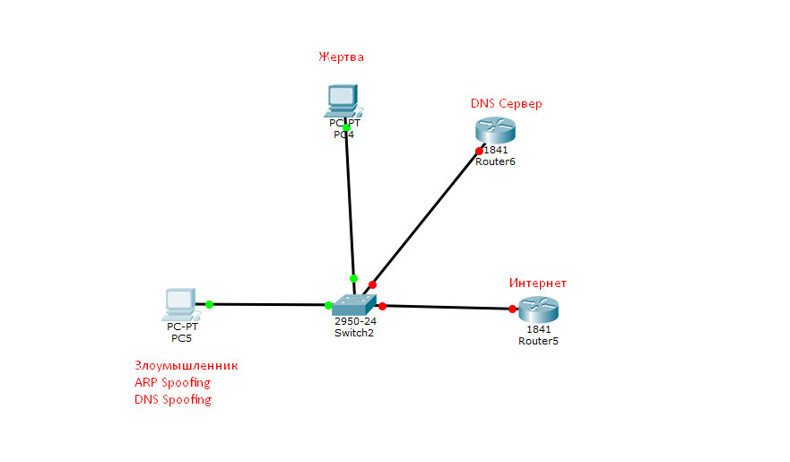
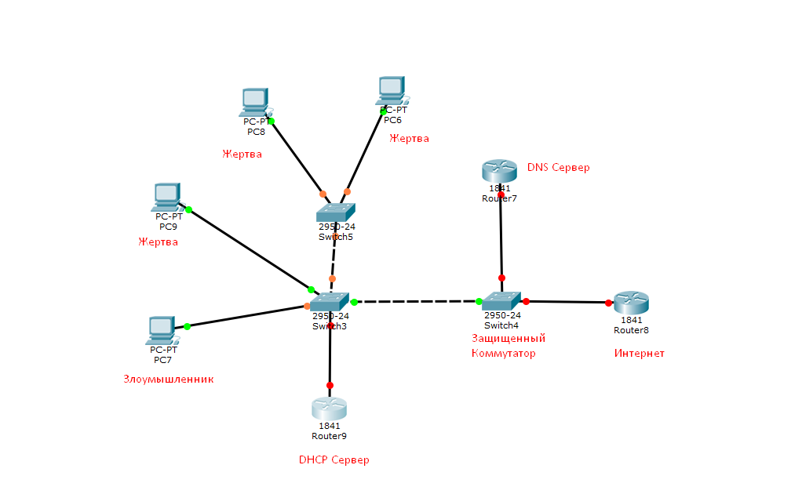

Этот гайд содержит 8 лабораторных сценариев (2 лёгких, 4 средних, 2 сложных) для отработки атак и анализа защищённости сетей. Для каждого сценария приведены 2-3 способа защиты от описанных атак. Инструменты: Gotcha (атаки и флуды), Zenmap / Nmap (разведка), Wireshark (анализ трафика).
Цель: Продемонстрировать уязвимость DHCP-сервера — исчерпать все доступные IP-адреса в пуле, чтобы легитимные клиенты не могли получить адрес.

nmap -sn 192.168.1.0/24 (или используйте "Сканировать сеть" в Gotcha → вкладка "Доступ"). Найдите IP DHCP-сервера и шлюза.ipconfig /renew на PC2). Оно не получит IP — пул исчерпан.dhcp).Цель: Заставить коммутатор перейти в режим хаба (ретранслировать трафик на все порты) и перехватить чужой трафик.

arp -a. Запомните MAC-адрес шлюза.ff:ff:ff:ff:ff:ff или MAC шлюза.Цель: Провести атаку "человек посередине" с помощью ARP Spoofing, затем подменить DNS-ответы и перенаправить жертву на фишинговый сайт.

Set-Service RemoteAccess -StartupType Automatic в PowerShell).arp -a — MAC шлюза совпадёт с вашим MAC).*.example.com → 192.168.1.100 (IP вашего фейкового веб-сервера). Включите catch-all при желании. TTL = 2.http://example.com — её браузер попадает на поддельный сайт. Логи Gotcha показывают подменённые запросы.Цель: Перегрузить DNS-сервер большим количеством запросов, сделав его недоступным для легитимных клиентов.

nslookup или сканирования портов (порт 53 UDP).nslookup ya.ru — таймаут или очень медленный ответ. Wireshark покажет лавину DNS-пакетов.Цель: Сначала исчерпать пул адресов, чтобы новые устройства не могли получить IP, затем подменить ARP для уже существующих клиентов и перехватить их данные.
Цель: Обнаружить открытые порты на сервере-жертве и затем вывести его из строя с помощью TCP SYN флуда.
nmap -p- -sS 192.168.1.10.Цель: Провести многоэтапную атаку: MAC flood (отключение безопасности коммутатора), ARP Spoofing (MITM), DNS Spoofing (перенаправление) и сниффинг паролей.
http.request.method == POST).Цель: Заблокировать выдачу IP-адресов, создать помехи в работе шлюза (ICMP flood) и перенаправить оставшихся клиентов через DNS Spoofing.
arp, dhcp, dns.qry.name, tcp.port == 80 — это ускоряет анализ.